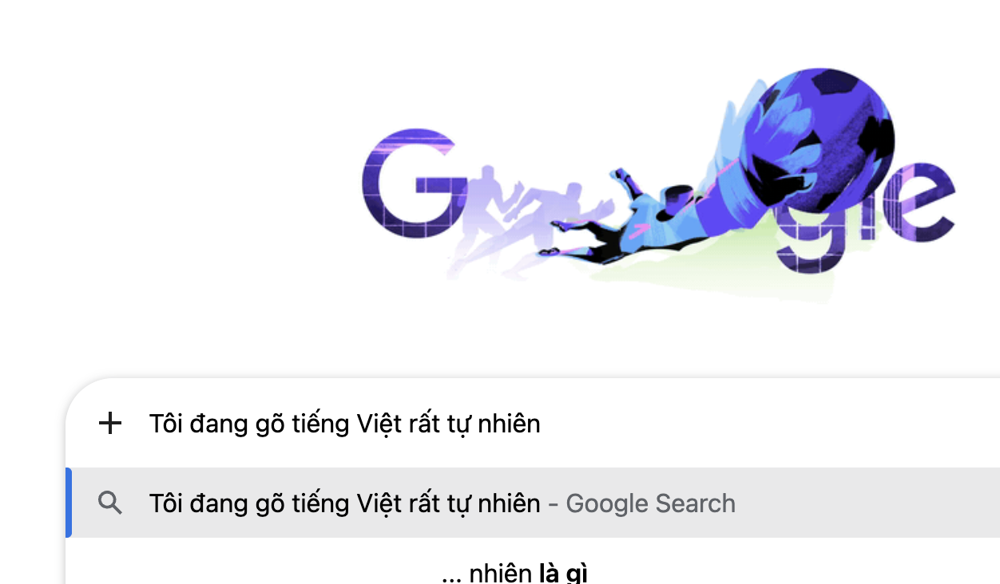
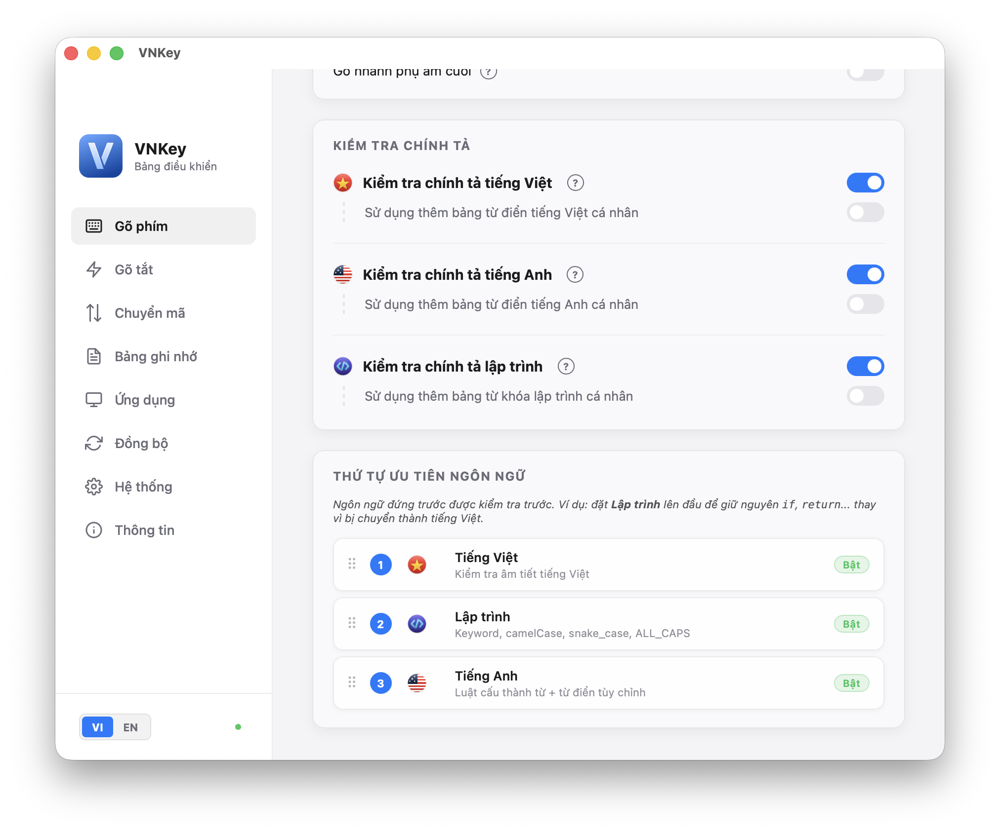
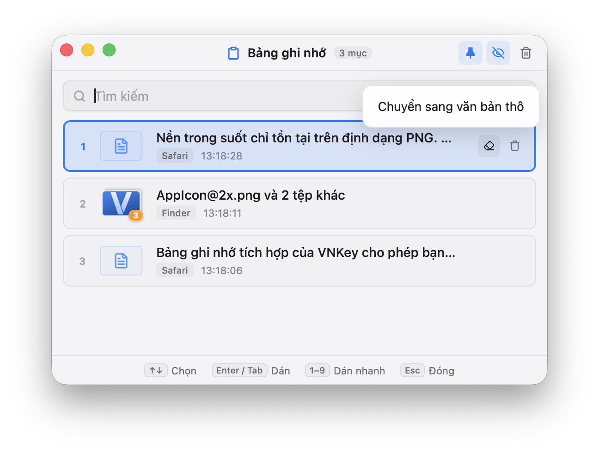
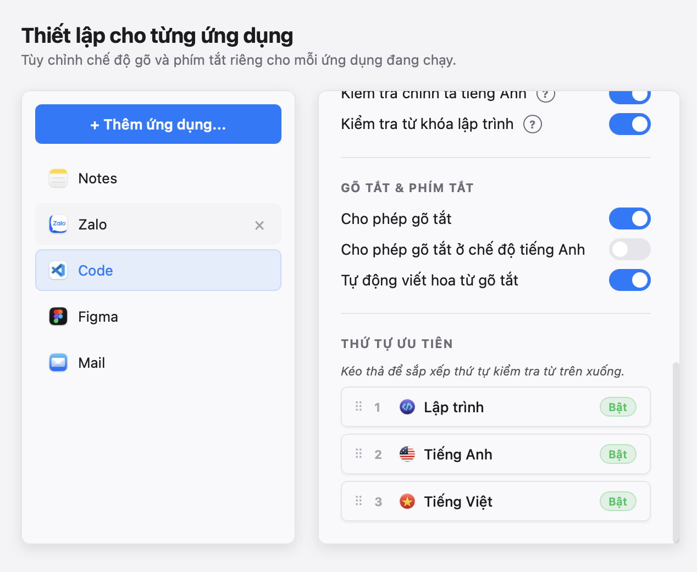
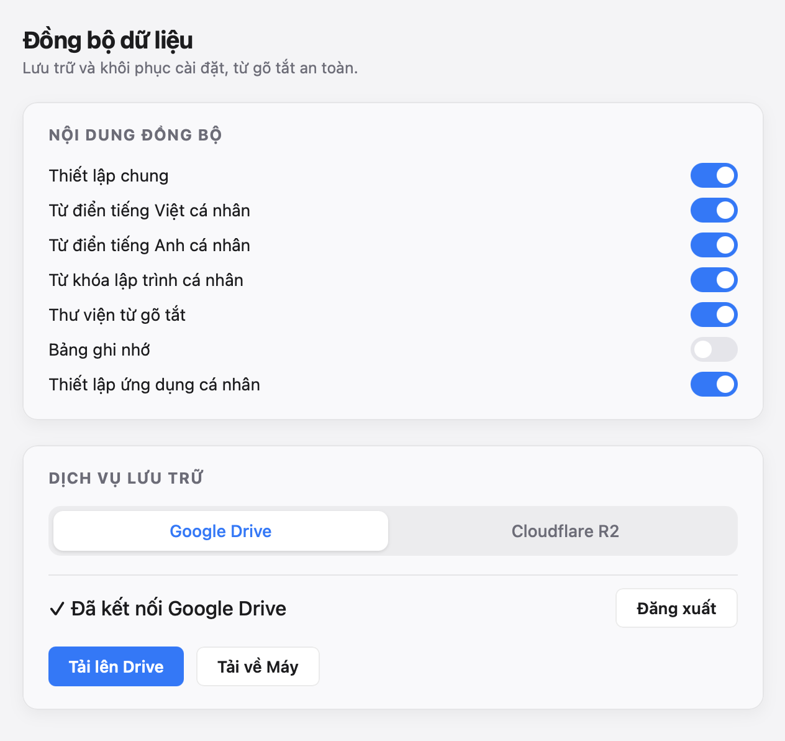

Được xây dựng trên nền tảng công nghệ hiện đại Tauri 2, Rust và Svelte 5. VNKey loại bỏ hoàn toàn lỗi gạch chân khó chịu trên macOS nhờ kỹ thuật Backspace thông minh, mang lại tốc độ và độ an toàn tuyệt đối.
Built on a modern technology stack of Tauri 2, Rust, and Svelte 5. VNKey completely eliminates the annoying underline issue on macOS with its smart Backspace technique, ensuring top speed and absolute security.
brew install --cask vnkey
Hãy thử gõ tiếng Việt hoặc viết code bên dưới để cảm nhận sự mượt mà của thuật toán xử lý phím thông minh.
Try typing Vietnamese or writing code below to experience the smoothness of our smart key processing engine.
Đầy đủ các công cụ mạnh mẽ hỗ trợ tối đa cho nhu cầu gõ văn bản và lập trình mỗi ngày.
A full suite of powerful tools designed to optimize your daily typing and coding workflow.
Sử dụng kỹ thuật Backspace thông minh loại bỏ hoàn toàn lỗi gạch chân/trùng ký tự khó chịu trên macOS của bộ gõ mặc định.
Employs smart backspacing to completely eliminate the annoying underline and character duplication bugs found in macOS's default input method.
Phát hiện lỗi sai quy tắc âm tiết tiếng Việt để tự động khôi phục phím gốc hoặc dừng gõ dấu sai vị trí.
Detects Vietnamese syllable rule violations to automatically restore original keys or prevent placing accents in wrong positions.
Bỏ qua kiểm tra chính tả cho từ khóa cú pháp (if, for, while) và các cấu trúc đặt tên biến camelCase, snake_case, ALL_CAPS.
Automatically bypasses spellcheck for syntax keywords (if, for, while) and variable styles like camelCase, snake_case, or ALL_CAPS.
Lưu trữ lịch sử sao chép (văn bản, hình ảnh, liên kết) và truy xuất cực nhanh bằng phím tắt ngay tại con trỏ chuột.
Stores copying history (text, images, links) and allows fast retrieval using a shortcut right at your cursor position.
Quản lý các cụm từ viết tắt dễ dàng, hỗ trợ tự động viết hoa (Auto Caps) và viết tắt thông minh trong chế độ tiếng Anh.
Manage text expansions easily, featuring automatic capitalization (Auto Caps) and smart abbreviations in English mode.
Tự động chuyển chế độ Anh/Việt hoặc bảng mã cũ (VNI, TCVN3) tương ứng khi chuyển đổi qua lại giữa các cửa sổ ứng dụng.
Automatically switches between English/Vietnamese typing modes or legacy encodings (VNI, TCVN3) when toggling between active applications.
Khám phá cách VNKey giải quyết triệt để các vấn đề của bộ gõ truyền thống bằng giải pháp kỹ thuật tối ưu.
Explore how VNKey tackles the fundamental limitations of legacy input methods with optimized engineering.
Khắc phục triệt để lỗi gạch chân khó chịu và nhân đôi ký tự trên macOS. Engine của VNKey theo dõi các phím vừa nhấn và giả lập sự kiện Backspace chính xác để xóa ký tự trung gian trước khi chèn ký tự có dấu mới.
Completely fixes the annoying underline bug and duplicated characters on macOS. VNKey's engine monitors keystrokes and simulates precise Backspace events to erase intermediate characters before inserting the newly accented character.

Tự động nhận diện các cú pháp lập trình như `camelCase`, `snake_case`, `ALL_CAPS` hoặc các từ khóa code để bỏ qua kiểm tra chính tả. Bạn có thể viết mã nguồn và chat tiếng Việt song song mà không cần chuyển đổi bộ gõ liên tục.
Automatically detects programming syntaxes such as `camelCase`, `snake_case`, `ALL_CAPS` or code keywords to bypass spelling verification. You can write code and chat in Vietnamese simultaneously without constant switcher toggling.

Lưu trữ lịch sử sao chép đa phương tiện (văn bản, hình ảnh, liên kết). Chỉ cần nhấn phím tắt, menu popover gọn nhẹ sẽ xuất hiện ngay tại con trỏ chuột để bạn tìm kiếm và dán nhanh dữ liệu cũ.
Stores rich-media clipboard history (text, images, and links). Simply press the hotkey, and a lightweight popover menu appears directly at your cursor location for fast searching and pasting.

Tự động thay đổi và khôi phục chế độ gõ (Anh/Việt) hoặc bảng mã tương ứng cho từng ứng dụng ngay khi chuyển đổi cửa sổ ứng dụng (Window Focus), tối ưu hóa trải nghiệm làm việc.
Automatically saves and restores the typing mode (English/Vietnamese) or encoding for each specific application the moment window focus changes, streamlining your workflow.

Đồng bộ cấu hình và dữ liệu gõ tắt qua Cloudflare R2 cá nhân. Toàn bộ dữ liệu được mã hóa AES-256 trực tiếp trên thiết bị của bạn trước khi tải lên, đảm bảo an toàn tuyệt đối.
Sync your settings and macro expansions via your own Cloudflare R2. All data is encrypted with AES-256 directly on your device prior to uploading, guaranteeing absolute privacy.

Đồng bộ cấu hình cài đặt, từ điển cá nhân, thư viện macro viết tắt và bảng ghi nhớ clipboard giữa các máy tính thông qua Cloudflare R2 của riêng bạn.
Sync configuration settings, personal dictionaries, abbreviation macros, and clipboard history across multiple computers using your own Cloudflare R2 bucket.
VNKey là hoàn toàn miễn phí và mã nguồn mở. Mọi sự ủng hộ của bạn sẽ giúp duy trì và phát triển dự án tốt hơn.
VNKey is completely free and open-source. Your support helps maintain and develop the project further.
Quét mã QR bằng ứng dụng MoMo để ủng hộ trực tiếp.
Scan the QR code with the MoMo app to donate directly.
Ủng hộ qua tài khoản PayPal quốc tế nhanh chóng.
Donate quickly using your international PayPal account.